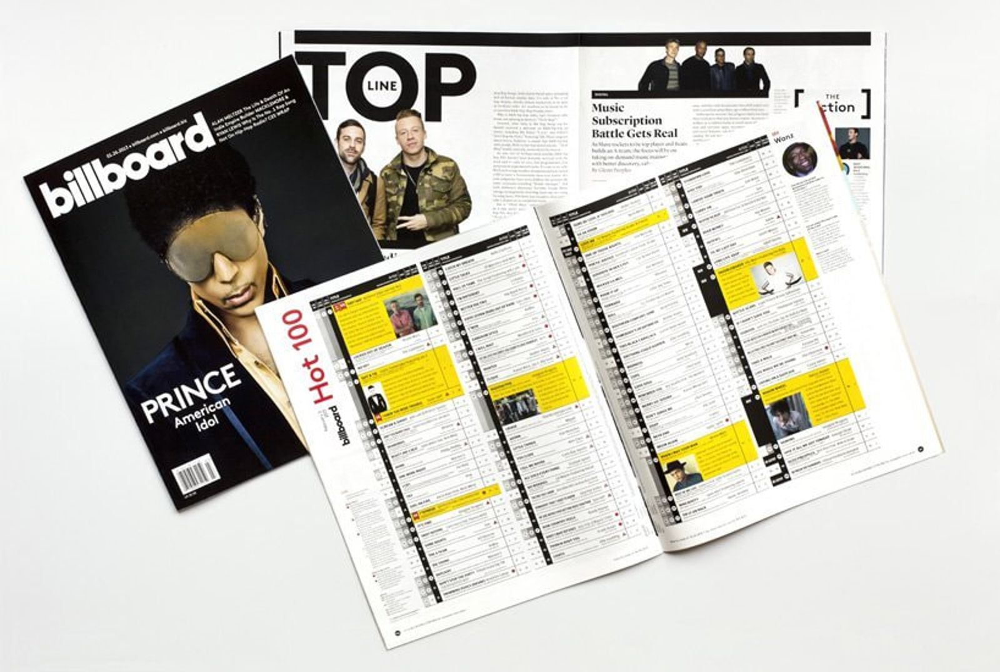
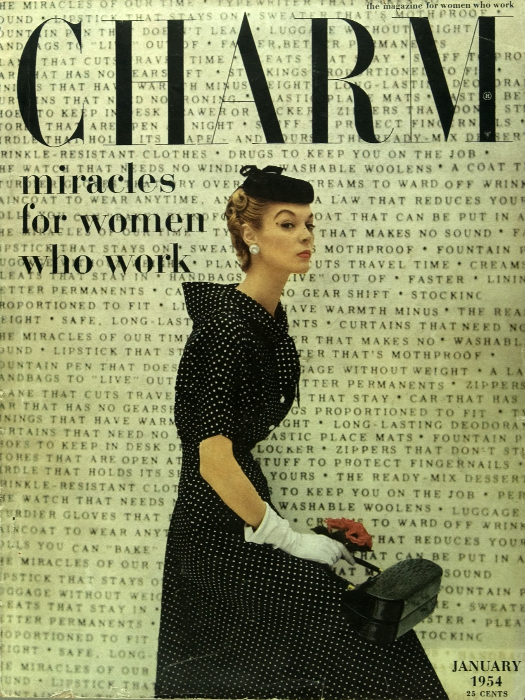
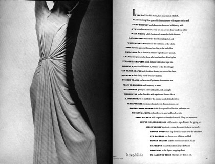
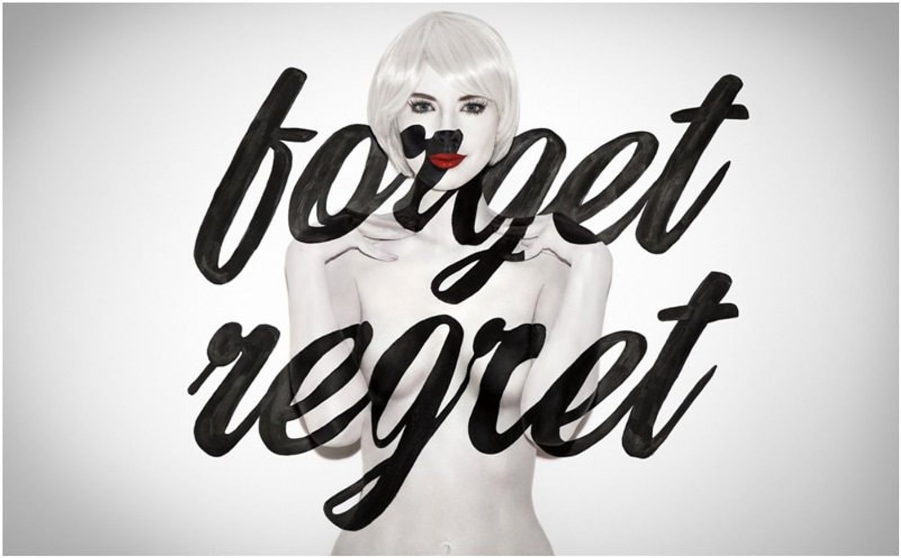

Graphic design is an industry that has been growing and changing for centuries at the hand of countless designers.
在眾多的設計師的齊心幫助下，平面設計是一個不斷地發展和變化的行業。
From those who specialize in typography or magazine design, through to album covers and political posters, each of these people has made their mark on the industry and shaped it in some way through hard work and some great designs.
從那些專門從事出版或雜誌設計的人到專輯封面和政治海報，這些人每個人都在行業中留下了自己的印記，並通過出色的設計作品塑造了視覺設計無可限制的未來性。
Visuals catch attention, and are easily remembered by people. More often, they are the first chance at impressing a potential customer and holding their interest for as long as possible.
視覺效果總是吸引著人們的注意，並且不容易忘記，因此，視覺設計經常是打動潛在客戶並保持其興趣的唯一機會。
That’s why so much attention is paid to the work of graphic designers these days. The industry is growing with its demand, and with such demand, the number of graphic designers popping up is rapidly rising, too. Graphic designers take the vision of their clients and bring it to life by visual communication.
這就是為什麼人們如此關注平面設計師的發展，這個行業隨著需求的增長而急速成長，並且隨著不同種類的需求，圖形設計師的多樣化，也在以驚人的速度變化中，他們需要採用客戶需要的效果，通過視覺設計，與觀眾交流，並傳達其意義。
People use designers to pull an idea out of their heads and into the real world.
視覺設計師就是將腦中的想法帶出到現實世界，並讓更多人了解。
- Michael Bierut -
“NOTHING I’VE DONE SINCE HAS SEEMED AS DIFFICULT.”
Michael Bierut is a partner in the New York office of Pentagram, a founder of Design Observer and a teacher at Yale School of Art and Yale School of Management. He is often credited with “democratizing design”, thanks to his unique and ubiquitous approach to graphic design. Bierut paved the way for "accessible" design whereby complex content was made more easy and enticing to read and consume through a sharp, direct design.
Michael Bierut是Pentagram紐約辦事處的合夥人和Design Observer的主要創始人，同時也是耶魯藝術學院與管理學院的教授。 由於他獨特且親民的視覺設計風格，他經常被譽為“大眾化設計”潮流的領頭羊。 Bierut讓原本難懂的視覺設計變得平易近人，複雜的內容可以變得更加容易，通過簡單明瞭的的設計吸引了人們的眼球。
- Alan Fletcher -

“If your mind is too open people can throw all kinds of rubbish into it.”
Synthesising the graphic traditions of Europe and North America to develop a spirited, witty and very personal visual style, Alan Fletcher is among the most influential figures in British graphic design as a founder of Pentagram in the 1970s. His expressive typography, bold colors and strong visual language helped pave the way for graphic design to be thought of as a key and crucial element to businesses, not just an optional decorative extra.
Alan Fletcher結合了歐洲和北美的設計傳統，營造出一種活潑，機智且十分具有個性的視覺風格，他是1970年代頂尖設計公司（五角大樓）創始人之一，是英國圖形設計領域最具影響力的人物。極具表現力的排版，大膽的色彩和強烈的視覺語言為視覺設計打造了無可限量的發展性，成為企業重視的關鍵要素，再也不限於裝飾功能。
- Cipe Pineles -
"We tried to make the prosaic attractive without using the tired clichés of false glamour. You might say we tried to convey the attractiveness of reality, as opposed to the glitter of a never-never land."
Cipe Pineles was one of the most prominent designers of the twentieth century and one of the first female art directors to work at a major magazine. She served in that capacity at Glamour, Seventeen, and Charm. Her career was also full of a lot of firsts; She was the first female designer to become a member of the Art Directors Club in New York, the first autonomous female art director for a magazine. She was also the first designer to hire fine artists to illustrate mass market publications which began a long standing trend within magazine design that would go on to shape the magazine design industry.
Cipe Pineles是20世紀最傑出的設計師之一，也是最早在大型雜誌社工作的女性藝術總監之一。 她曾在Glamour, Seventeen, and Charm雜誌社中任職。 她的職業生涯也為視覺設計開創了許多第一次。 她是第一位成為紐約藝術總監俱樂部成員的女性設計師，也是第一位雜誌的獨立女性藝術總監。同時也是第一位聘請優秀藝術家來說明大眾出版物的設計師，這促使了雜誌設計領域的長期發展，並最終影響了整個雜誌設計行業。
- Alexey Brodovitch -
"If you know yourself, you are doomed."
Alexey Brodovitch is known foremost for his work on the american fashion-magazine Harper's bazaar. He was the first art director to integrate image and text. Most american magazines at that time used text and illustration seperately, dividing them by wide white margins. The typeface he preferred was Bodoni, but when needed he switched to Stencil, Typewriter or a script. He matched the typeface with the feeling or with the need for an appropiate effect. Legibility was not his primary concern. His layouts are easily recognized by his generous use of white space. Colleagues at other magazines saw his sparse designs as truly elegant, but a waste of valuable space.
Alexey Brodovitch以其在美國時尚雜誌Harper義賣市場上的作品而聞名。 他是第一位完美地整合圖像和文字的藝術總監。 當時，大多數美國雜誌都單獨使用文字和插圖，並用寬闊的空白將它們分開。 他偏愛的字體是襯線字體，但必要時也會改用了其他字體，他的專長就是使字體符合整體感覺或適合的效果，易讀性不是他的主要目的。 對空白的大膽使用，是他的特色，因為人們常將他那看似浪費空間的設計，視為真正的優雅。
- Stefan Sagmeister -
“Design that needed guts from the creator and still carries the ghost of these guts in the final execution.”
Stefan Sagmeister is an accomplished contemporary designer with an impressive client list, ranging from The Rolling Stones and HBO to the Guggenheim. He began his design career at the age of 15 at "Alphorn", an Austrian Youth magazine, which is named after the traditional Alpine musical instrument. Sagmeister’s work often blends humor, sexuality, the unorthodox, and painstaking detail to create jarringly modern designs that continue to inspire and shake the design community. He has long stated that he wants to create work that ‘touches the heart’ of the viewer.
Stefan Sagmeister是個出色的當代設計師，從 The Rolling Stones，HBO到Guggenheim，都可以看到他為其品牌概念設計的作品， 從15歲開始在奧地利青年雜誌 Alphorn 中開始他不凡的設計旅程，最具特色的就是，他的作品通常融合幽默，性，非傳統卻細緻的設計巧思，創造出震撼人心的當代設計，不斷激發，同時也挑戰著設計界，然而，他早就說過，他想創造一種“觸動人心”的作品，註定了他的不凡。